I chose part 1 and part 4 for my implementation.
I used the staff library (BUILD_CUSTOM=Off), not the
code from my 3-1 submission.
This assignment was about finishing off the global illumination renderer with more focus on materials and lenses, where we modeled BRDFs of additional materials like glass, and effects of an nonzero-sized camera lens.
This part really shows the versatility and simplicity of a physically-based renderer, where just by slightly adjusting the behavior of the rays, we can model highly sophisticated and realistic effects with low effort. We did not have to change any part of the rendering pipeline to achieve this. It would take significantly larger amount of effort to implement similar effects in a rasterization-based renderer, with a much more complicated pipeline.
| 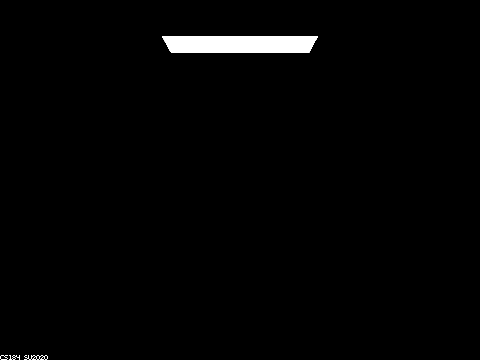 | 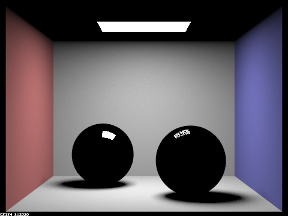 | 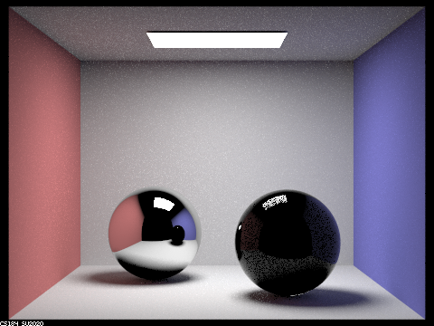 | 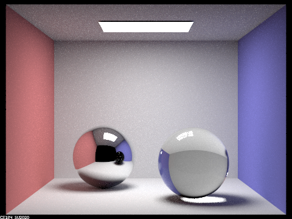 |
| 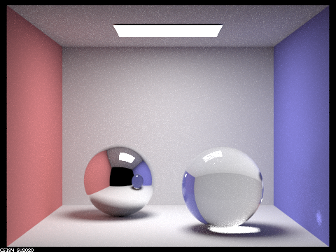 | 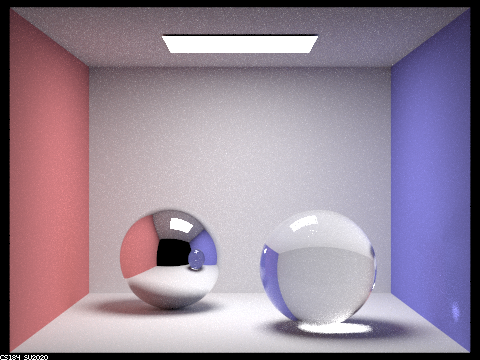 | 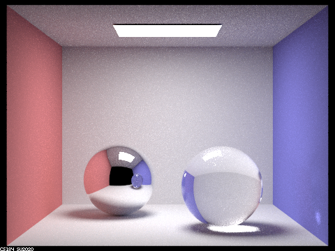 |
max_ray_depth 0, 1, 2, 3, 4, 5, 100,
-s 256 -l 4
Notable multibounce effects include:
m=4, and
refraction as well at m>=5.
light --> surrounding --> right sphere --> left sphere --> eye.
m=3)
that took an additional bounce off the wall.
The pinhole camera model does not take into account the change of direction of a ray when it goes through the aperture of the camera. In reality, however small the aperture is, it is a transparent lens that refracts the ray that goes through it. The thin-lens camera model models this refraction, leveraging the fact that a thin lens always have a fixed focal plane where all of the objects on the focal plane are focused clearly on the image plane, or the sensor of the camera. This means that a group of rays that originate from an unfocused object no longer intersects the same point on the image plane, which results in a blurry image for that object.
Below are the images that have increasing value of the focal distance. We can see that different parts of the Lucy statue gets focused on the image, from closest (torch) to furthest (corner of the Cornell box) from the camera. Aperture size was 0.1.
| 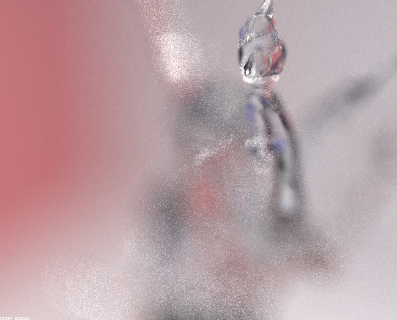 | 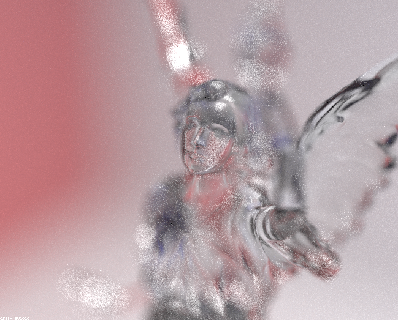 | |
| 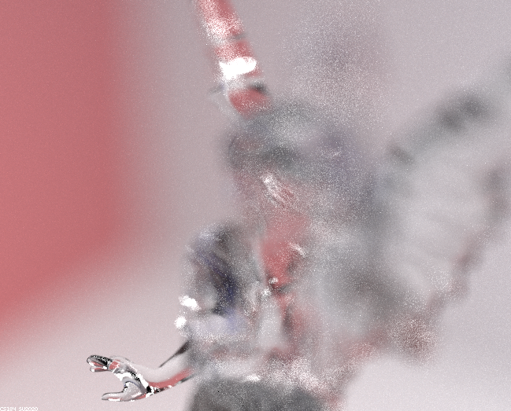 | 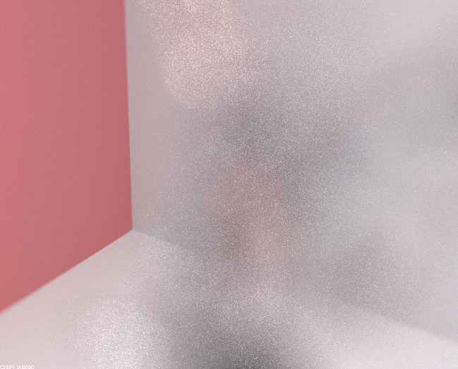 |
focalDistance set to
1.2, 1.4, 1.5, 1.7, 3.1
(-s 256 -l 4, -b 0.1)
We can see that as the aperture size gets larger, the objects that are not on the focal plane gets more blurrier: the hand, light, right wing of Lucy and the corner behind gets blurrier with the larger aperture sizes.
This is expected because a smaller aperture is closer to the pinhole camera model that we rendered before, where objects at any distance gets focused on the image plane and therefore everything is clear.
| 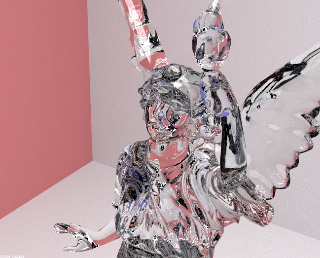 | 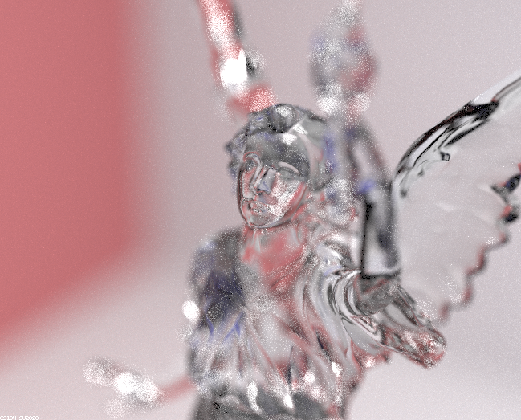 |
| 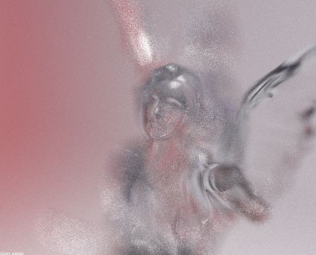 |
lensRadius set to
0.0, 0.05, 0.1, 0.2
(-s 256 -l 4)